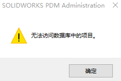
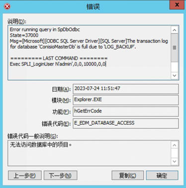

无法访问数据库中的项目
问题日志1
客户端日志显示fk_groupprojectnotification约束错误:
1 | 在SpDbOdbc中运行查询错误 |
导致
如果我们关注其中一个在修改时导致保存错误的转换(RnD EditingRequired)，我们可以看到它被配置为通知根文件夹“\Projects\”下的所有文件的两个组
此转换的两个组的通知分配为NotificationID = 547和548
方法1
要解决此问题并允许删除转换，可以使用脚本在删除转换之前删除链接到该转换的所有通知项。
- 修改前请先备份数据库。
- 记录删除失败的转换的名称、源状态和目标状态。关闭工作流。
- 加载附加的“ListAllWorkflowTransitions”。在sql管理工作室。在保险库数据库上运行它。
- 定位上述转换的TransitionID -确保源状态和目的状态匹配。
- 加载附加的“DeleteAllNotificationsForSelectTransition.sql”。确保使用上一步中的TransitionID进行更新。注意!运行此脚本后，所有链接到转换的通知都将被删除。
- 重新打开工作流。转换现在应该显示它没有通知。
- 删除转换后保存工作流现在应该成功完成。
方法2
参考安装手册P35。有一种情况是主数据库log文件满了导致。需要清除下日志。
